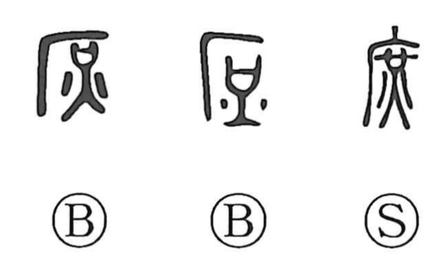

Explanation
Shirakawa sees 庶 as a kitchen scene: the shelter radical 广 shows the roof of a kitchen, beneath which a cooking vessel and the fire marks depict food simmering over a flame. In early forms the character thus meant to boil, and classical texts like the Yili contrast the main dish with the heaped side dishes called 庶羞. From this image of assorted side fare arose the senses many and various, reflected in words for miscellaneous affairs (庶事, 庶務) and, by extension, the general populace (庶人, 庶民). By opposition to the main line of a household it also gave 庶子, a child of a secondary wife, and in 庶幾 it conveys an earnest wish. The original cooking sense later came to be written with 煮, while 庶 retained the ideas of variety and multitude.